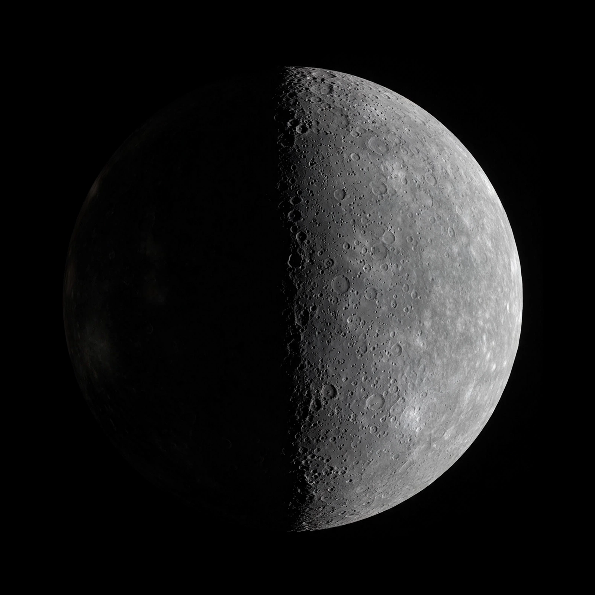

Mercury (planet)

Mercury is the smallest planet in the Solar System and the closest to the Sun, orbiting once every 87.97 Earth days. Despite its proximity it is not the hottest planet — that is Venus — because Mercury lacks an atmosphere to retain heat, and its surface swings between about -180 °C at night and 430 °C in the day.
Its cratered surface resembles the Moon's. Mercury has a disproportionately large metallic core, which generates a weak magnetic field, and it has shrunk noticeably as that core cooled, wrinkling the surface with scarps.
Exploration
Only two spacecraft had visited Mercury as of the mid-2020s: NASA's Mariner 10 flew by in 1974-75 and MESSENGER orbited the planet from 2011 to 2015. ESA/JAXA's BepiColombo was en route, expected to enter orbit in the mid-2020s.
Observation
Mercury is difficult to observe because it never strays far from the Sun in the sky. The precession of its orbit's perihelion — explained by Einstein's general relativity in 1915 — was a famous early test of that theory, after Newtonian attempts invoking a hypothetical planet Vulcan failed.